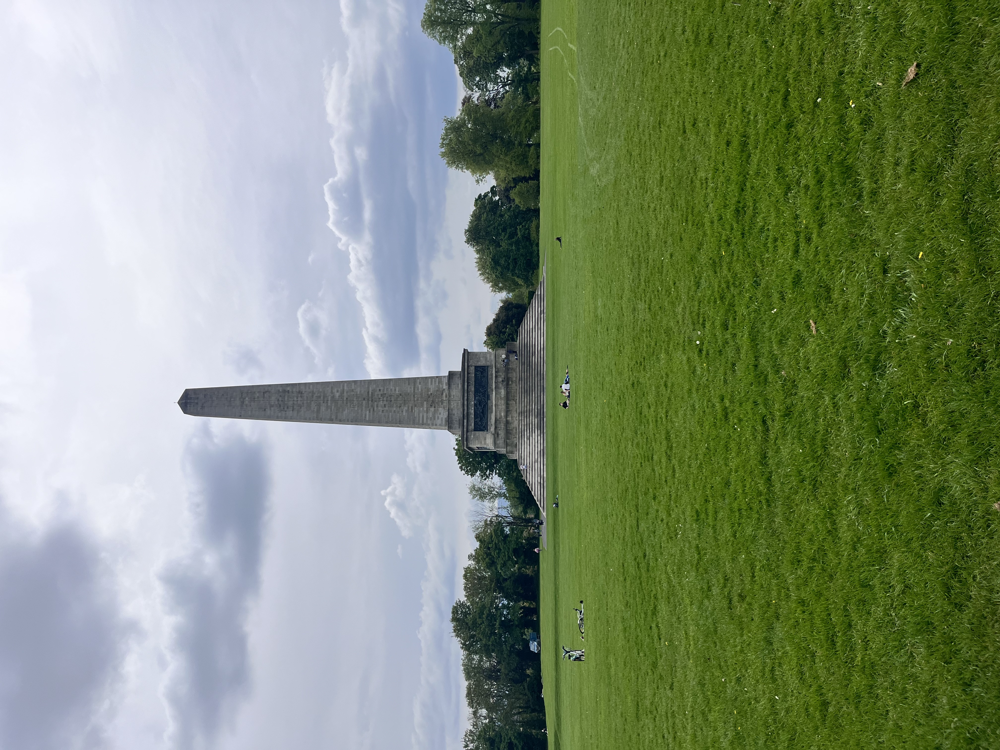
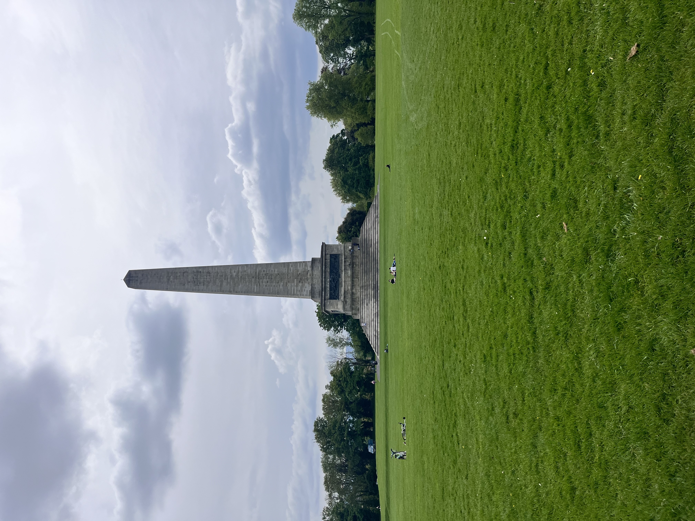

Trip to Northern Ierland: An Unfinished Revolution
I did a 90 euro day trip tour to Northern Ireland, which sounds a little expensive, but we got to see many things, and we did not have to worry about coordinating travel; all we had to do was get on the bus in the morning. The first stop was in Belfast, where we could go to the Titanic museum or a black cab city tour. I picked the cab tour because I wanted to learn more about the troubles. I was completely blown away by the tour and the city; there was a massive wall that goes down the middle of the city separating the 2 groups of people. We got to go on both sides of the wall and see how different it was with the street art condemning the actions of the other side while mourning their own losses.
For the next leg of the trip, I got to briefly see the Titanic museum but I did not get the chance to actually go in. We then went an hour further north to the beautiful coast, where we saw Dunlic castle, which you could really tell was the inspiration behind the Iron Islands from Game of Thrones; however, we only had 30 minutes there, so I had to go very fast. Then, for our last stop, we went to the famous Giants Causeway. The first thing we did was eat at the restaurant that everyone and their grandma seemed to love, but I actually did not like my sandwich. Instead, I just lied and said I did (It was not very well made). We then took the walk down to the causeway, where the people I was with were taking too long, so I ditched them to look at it on my own. The rocks were quite slippery, but climbing the hexagons was definitely optional. I think I did a great job of taking pictures. Overall it was a great day, and the Belfast cab tour, I think, changed my whole view of the world and, in a way, changed my life.


 
